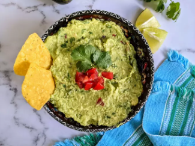

Guacamole

Description
This guacamole recipe gets a tasty kick from cayenne and cilantro. You can serve it smooth or chunky depending on your tastes.
Ingredients
- 3 avocados - peeled, pitted, and mashed
- 1 lime, juiced
- 1 teaspoon salt
- 2 roma (plum) tomatoes, diced
- ½ cup diced onion
- 3 tablespoons chopped fresh cilantro
- 1 teaspoon minced garlic
- 1 pinch ground cayenne pepper (Optional)
Steps
- Mash avocados, lime juice, and salt together in a medium bowl; mix in tomatoes, onion, cilantro, and garlic. Stir in cayenne pepper.
- Serve immediately, or cover and refrigerate for 1 hour for improved flavor.
Other recipes